家谱
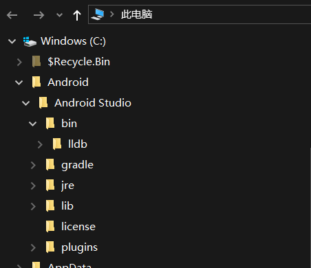
目录
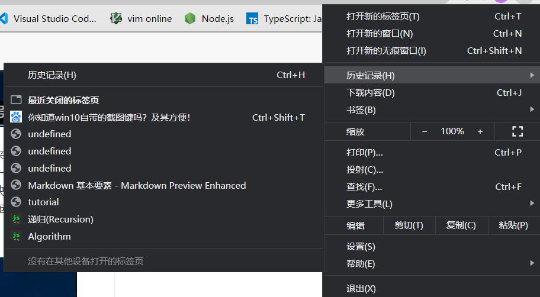
菜单
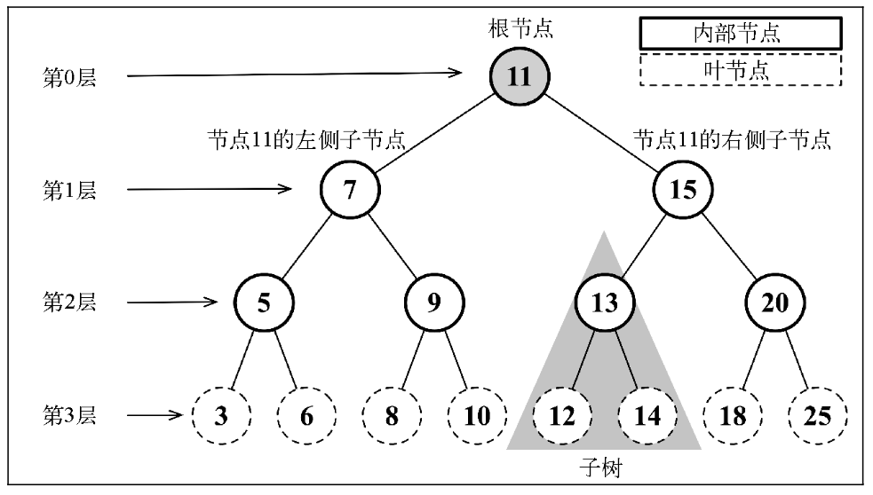
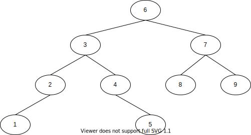
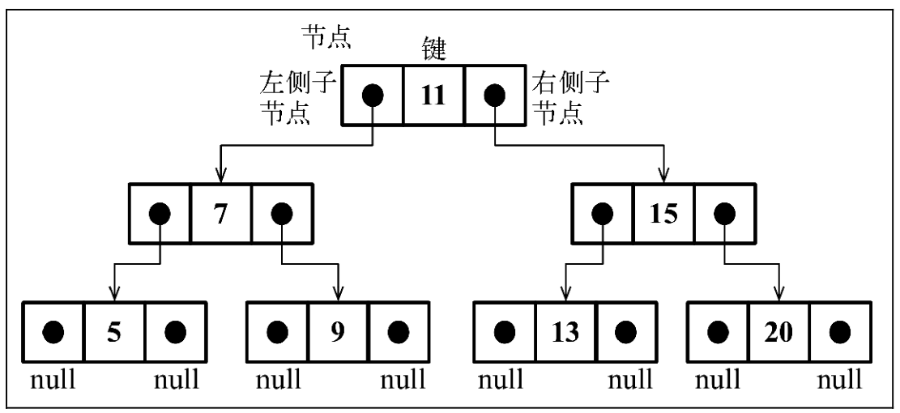
class Node {
constructor(key) {
this.key = key; // 节点值
this.left = null; // 指向左子节点
this.right = null; // 指向右子节点
}
}
function defaultCompare(a, b) {
if (a === b) {
return 0;
}
return a < b ? -1 : 1;
}
class BinarySearchTree {
constructor(compareFn = defaultCompare) {
this.compareFn = compareFn; // 用来比较节点值
this.root = null; // 指向Node类型的根节点
}
insert(key){}
search(key){}
remove(key){}
inOrderTraverse(){}
preOrderTraverse(){}
postOrderTraverse(){}
min(){}
max(){}
}
insert(key) {
if (this.root == null) { //树为空
this.root = new Node(key); //插入根节点
} else {
this.insertNode(this.root, key); //插入其它位置
}
}
insertNode(node, key) {
if (this.compareFn(key, node.key) === -1) { //key < node.key
if (node.left == null) {
node.left = new Node(key);
} else {
this.insertNode(node.left, key); //递归插入左子树
}
} else if (node.right == null) { //node右子节点为空
node.right = new Node(key); //插入右子节点位置
} else {
this.insertNode(node.right, key); //递归插入右子树
}
}
//创建一个树对象
const tree = new BinarySearchTree();
//插入一个值
tree.insert(7);
tree.insert(15);
tree.insert(5);
tree.insert(3);
tree.insert(9);
tree.insert(8);
tree.insert(10);
tree.insert(13);
tree.insert(12);
tree.insert(14);
tree.insert(20);
tree.insert(18);
tree.insert(25);
tree.insert(6)
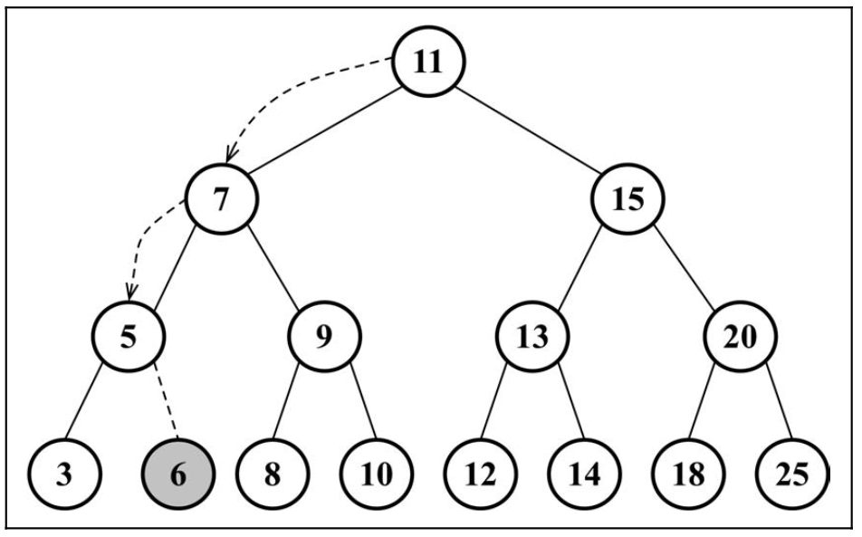
遍历一棵树是指访问树的每个节点并对它们进行某种操作的过程
中序遍历
先序遍历
后序遍历
inOrderTraverse(callback) {
this.inOrderTraverseNode(this.root, callback);
}
inOrderTraverseNode(node, callback) {
if (node != null) {
this.inOrderTraverseNode(node.left, callback); //递归左子节点
callback(node.key); //访问节点
this.inOrderTraverseNode(node.right, callback); //递归右子节点
}
}
//定义一个访问函数
const printNode = (value) => console.log(value);
//中序遍历
tree.inOrderTraverse(printNode);
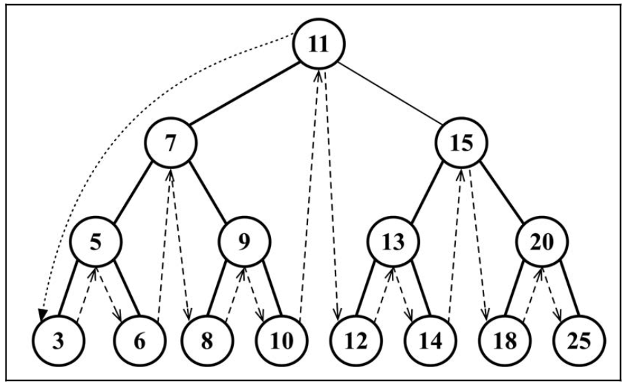
preOrderTraverse(callback) {
this.preOrderTraverseNode(this.root, callback);
}
preOrderTraverseNode(node, callback) {
if (node != null) {
callback(node.key); //访问节点
this.preOrderTraverseNode(node.left, callback);//递归左子节点
this.preOrderTraverseNode(node.right, callback);//递归右子节点
}
}
//定义一个访问函数
const printNode = (value) => console.log(value);
//先序遍历
tree.preOrderTraverse(printNode);
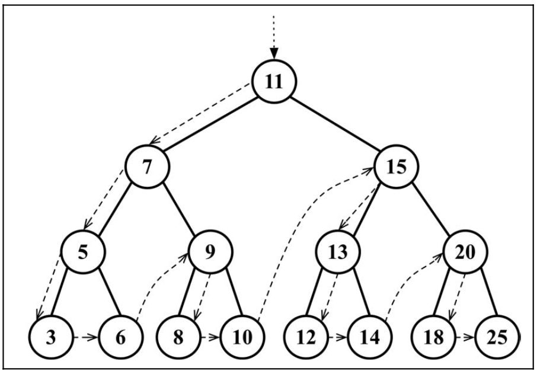
postOrderTraverse(callback) {
this.postOrderTraverseNode(this.root, callback);
}
postOrderTraverseNode(node, callback) {
if (node != null) {
this.postOrderTraverseNode(node.left, callback);//递归左子节点
this.postOrderTraverseNode(node.right, callback);//递归右子节点
callback(node.key); //访问节点
}
}
//定义一个访问函数
const printNode = (value) => console.log(value);
//先序遍历
tree.preOrderTraverse(printNode);
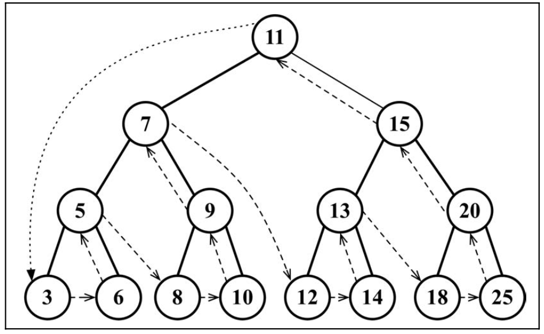
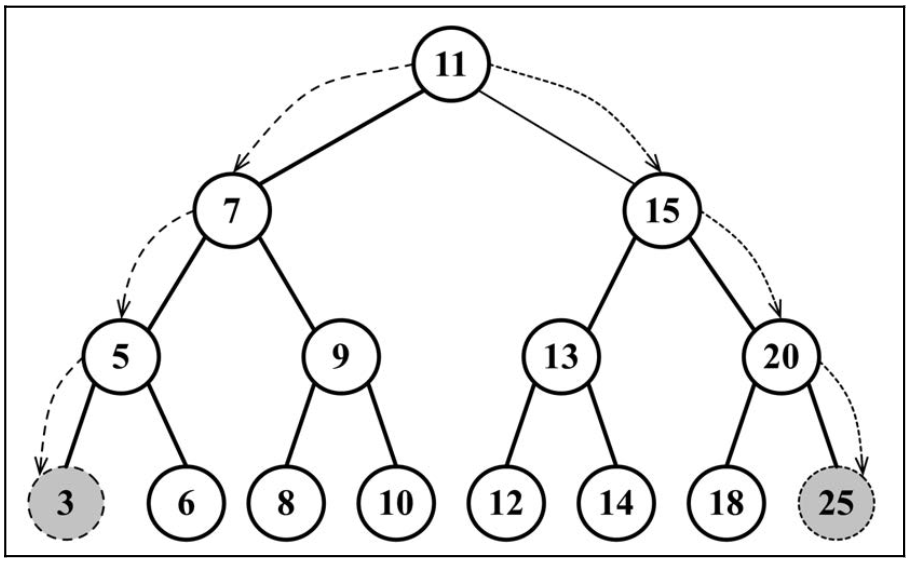
min() {
return this.minNode(this.root);
}
minNode(node) {
let current = node;
//找最左边的叶子节点
while (current != null && current.left != null) {
current = current.left;
}
return current;
}
max() {
return this.minNode(this.root);
}
maxNode(node) {
let current = node;
//找最左边的叶子节点
while (current != null && current.right != null) {
current = current.right;
}
return current;
}
search(key) {
return this.searchNode(this.root, key);
}
searchNode(node, key) {
if (node == null) {
return false;
}
if (this.compareFn(key, node.key) === -1) { //key < node.key
return this.searchNode(node.left, key); //搜索左子树
} if (this.compareFn(key, node.key) === 1) { //key > node.key
return this.searchNode(node.right, key); //搜索右子树
}
return true;
}
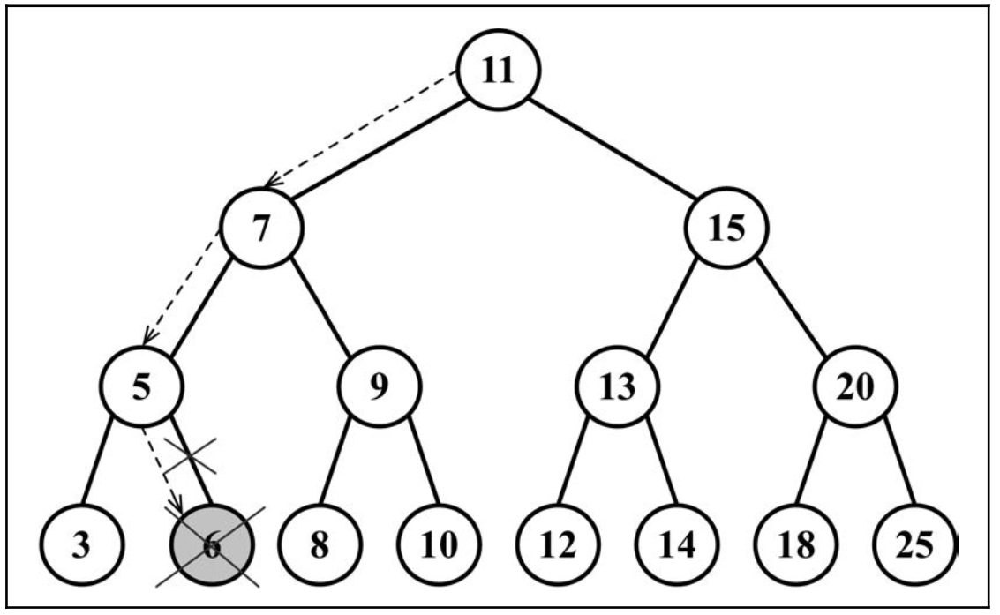
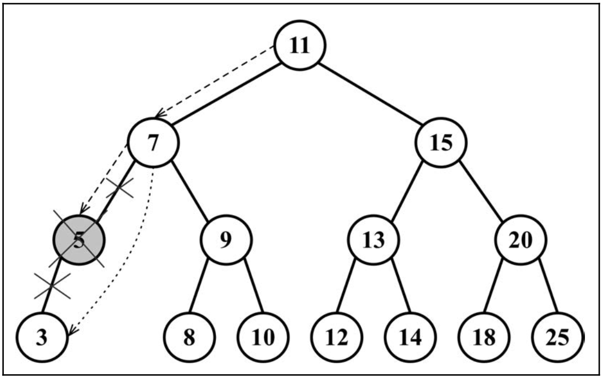
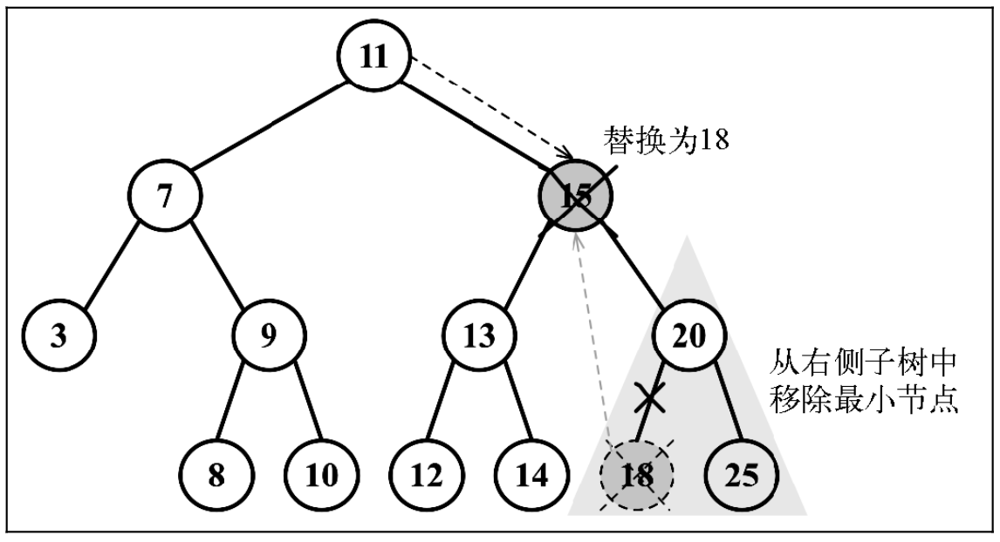
remove(key) {
this.root = this.removeNode(this.root, key);
}
removeNode(node, key) {
//没找到
if (node == null) {
return undefined;
}
//查找节点
if (this.compareFn(key, node.key) === Compare.LESS_THAN) {
node.left = this.removeNode(node.left, key);
return node;
} if (this.compareFn(key, node.key) === Compare.BIGGER_THAN) {
node.right = this.removeNode(node.right, key);
return node;
}
// 删除该节点
// 叶子节点
if (node.left == null && node.right == null) {
node = undefined;
return node;
}
// 只有一个子节点
if (node.left == null) {
node = node.right;
return node;
} if (node.right == null) {
node = node.left;
return node;
}
// 有两个子节点
const aux = this.minNode(node.right);
node.key = aux.key;
node.right = this.removeNode(node.right, aux.key);
return node;
}
设计一个二叉搜索树，向树中插入1,2,3,4,5,6,7,8,9,10,分别用先序、中序、后序方式遍历该树。